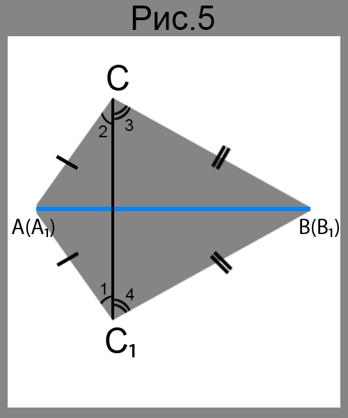
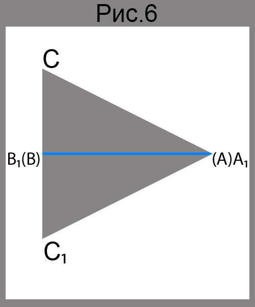
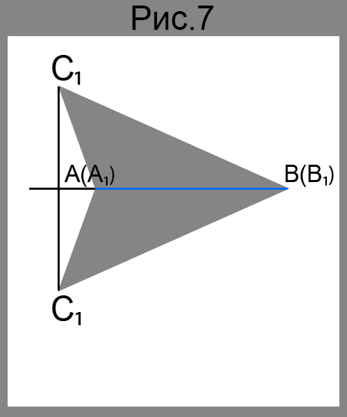
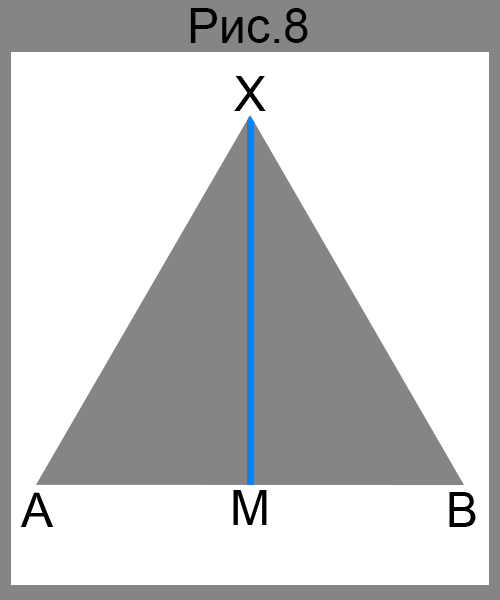

Третий признак равенства треугольников
Третий признак равенства треугольников: по трем сторонам
Теорема
Если три стороны одного треугольника равны соответственно трем сторонам другого треугольника, то такие треугольники равны.

Доказательство
Рассмотрим треугольник ABC и A₁B₁C₁, у которых AB=A₁B₁, BC=B₁C₁, CA=C₁A₁. Докажем, что ▲ABC=▲A₁B₁C₁.
Расположим треугольник ABC и A₁B₁C₁ так, чтобы вершина A совместилась с вершиной ▲A₁, вершина B - c B₁, а вершины C и C₁ лежали в разных полуплоскостях относительно прямой AB< strong>(рис.5). Проведем отрезок CC₁. Так как AC=A₁C₁, то треугольник CA₁C₁ - равнобедренный, а значит ∠1=∠2. Аналогично можно доказать, что ∠3=∠4. Следовательно, ∠A₁C₁B₁=∠A₁CB₁. Тогда треугольники A₁C₁B₁ и A₁CB₁ равны по первому признаку равенства треугольников.>  
Казалось бы, доказательство завершено. Однако мы рассмотрели лишь случай, когда отрезок CC₁ пересекает отрезок A₁B₁ во внутренней точке. На самом деле отрезок CC₁ может проходить через один из концов отрезка A₁B₁, например через точку A₁ (рис.6), или не иметь общих точек с отрезком A₁B₁ (рис.7). В обоих случаях доказательства будут аналогичными приведенному.
Теорема
Если точка равноудалена от концов отрезка, то она принадлежит серединному перпендикуляру этого отрезка.

Доказательство
Пусть точка X равноудалена от концов отрезка AB, то есть XA=XB (рис.8). Рассмотрим треугольники AXM и BXM, где точка M - середина отрезка AB. Тогда ▲AXM=▲BXM по третьему признаку равенства треугольников. Отсюда ∠AMX=∠BMX. Сумма этих углов равна 180°, следовательно, каждый из них равен 90°. Значит, прямая XM - серединный перпендикуляр отрезка AB.
Заметим, что мы рассмотрели случай, когда точка X не принадлежит прямой AB. Если точка X принадлежит прямой AB, то она совпадает с серединой отрезка AB, а значит, принадлежит его серединному перпендикуляру.